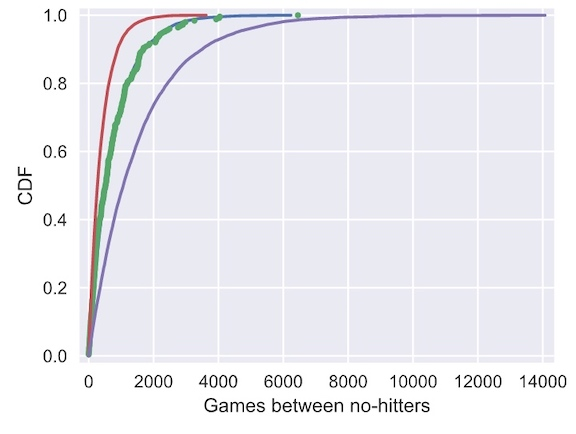
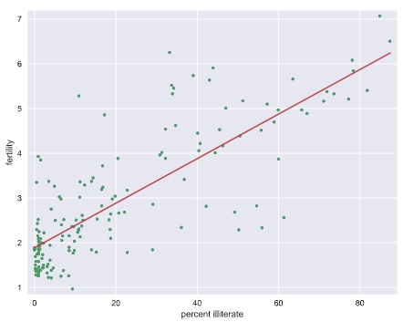

Parameter estimation by optimization
nohitter_times is an array with length of 251. array([ 843, 1613, 1101, 215, 684, 814,..])
# Seed random number generator
np.random.seed(42)
# Compute mean no-hitter time: tau
tau = np.mean(nohitter_times)
# Draw out of an exponential distribution with parameter tau: inter_nohitter_time
inter_nohitter_time = np.random.exponential(tau, 100000)
# Plot the PDF and label axes
_ = plt.hist(inter_nohitter_time,
bins=50, normed=True, histtype='step')
_ = plt.xlabel('Games between no-hitters')
_ = plt.ylabel('PDF')
Check if the data nohitter_times is exponential distribution.
# Create an ECDF from real data: x, y
x, y = ecdf(nohitter_times)
# Create a CDF from theoretical samples: x_theor, y_theor
x_theor, y_theor = ecdf(inter_nohitter_time)
# Overlay the plots
plt.plot(x_theor,y_theor )
plt.plot(x, y, marker='.', linestyle='none')
# Margins and axis labels
plt.margins(0.02)
plt.xlabel('Games between no-hitters')
plt.ylabel('CDF')
# Show the plot
plt.show()

It looks like no-hitters in the modern era of Major League Baseball are Exponentially distributed. Based on the story of the Exponential distribution, this suggests that they are a random process; when a no-hitter will happen is independent of when the last no-hitter was.
How is the parameter optimal?
Plot the mean as 1/2 tau and 2 tau to see how they fit the data
# Plot the theoretical CDFs
plt.plot(x_theor, y_theor)
plt.plot(x, y, marker='.', linestyle='none')
plt.margins(0.02)
plt.xlabel('Games between no-hitters')
plt.ylabel('CDF')
# Take samples with half tau: samples_half
samples_half = np.random.exponential(tau/2, 10000)
# Take samples with double tau: samples_double
samples_double = np.random.exponential(tau*2, 10000)
# Generate CDFs from these samples
x_half, y_half = ecdf(samples_half)
x_double, y_double = ecdf(samples_double)
# Plot these CDFs as lines
_ = plt.plot(x_half, y_half)
_ = plt.plot(x_double, y_double)
# Show the plot
plt.show()

The value of tau given by the mean matches the data best. In this way, tau is an optimal parameter.
Fit a linear regression line to a scatter plot
illiteracy and fertility are two arrays of data that represent the illiteracy rate (%) and average number of children born per woman in each country. (array length 161)
# Plot the illiteracy rate versus fertility
_ = plt.plot(illiteracy, fertility, marker='.', linestyle='none')
plt.margins(0.02)
_ = plt.xlabel('percent illiterate')
_ = plt.ylabel('fertility')
# Perform a linear regression using np.polyfit(): a, b
a, b = np.polyfit(illiteracy, fertility, 1)
# Print the results to the screen
print('slope =', a, 'children per woman / percent illiterate')
print('intercept =', b, 'children per woman')
# Make theoretical line to plot
x = np.array([0,100])
y = x * a + b
# Add regression line to your plot
_ = plt.plot(x, y)
# Draw the plot
plt.show()
 slope = 0.05 children per woman / percent illiterate intercept = 1.89 children per woman
How the slope is optimal?
- Specify the values of the slope to compute the RSS. Use
np.linspace()to get 200 points in the range between 0 and 0.1 - Initialize an array, rss, to contain the RSS using
np.empty_like()and the array you created above. Theempty_like()function returns a new array with the same shape and type as a given array (in this case,a_vals).
# Specify slopes to consider: a_vals
a_vals = np.linspace(0, 0.1, 200)
# Initialize sum of square of residuals: rss
rss = np.empty_like(a_vals)
# Compute sum of square of residuals for each value of a_vals
for i, a in enumerate(a_vals):
rss[i] = np.sum((fertility - a*illiteracy - b)**2)
# Plot the RSS
plt.plot(a_vals, rss, '-')
plt.xlabel('slope (children per woman / percent illiterate)')
plt.ylabel('sum of square of residuals')
plt.show()

The minimum on the plot, that is the value of the slope that gives the minimum sum of the square of the residuals, is the same value you got when performing the regression.
Bootstrap confident intervals
Visualize bootstrap
for _ in range(50):
# Generate bootstrap sample: bs_sample
bs_sample = np.random.choice(rainfall, size=len(rainfall))
# Compute and plot ECDF from bootstrap sample
x, y = ecdf(bs_sample)
_ = plt.plot(x, y, marker='.', linestyle='none',
color='gray', alpha=0.1)
# Compute and plot ECDF from original data
x, y = ecdf(rainfall)
_ = plt.plot(x, y, marker='.')
# Make margins and label axes
plt.margins(0.02)
_ = plt.xlabel('yearly rainfall (mm)')
_ = plt.ylabel('ECDF')
# Show the plot
plt.show()
Source
https://www.datacamp.com/courses/statistical-thinking-in-python-part-1